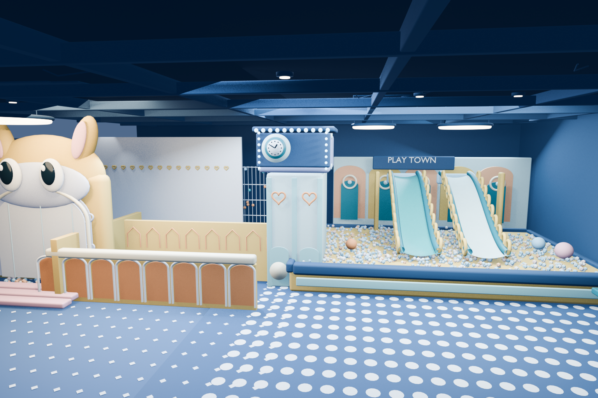
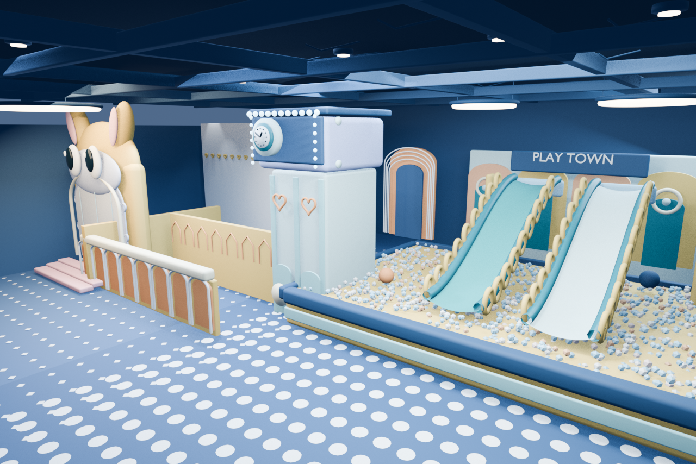

PHOTO TO SPACE · 2026.11.09
童梦空间.
一张照片，重新走进一座蓝色的儿童乐园。
从兔子入口到钟楼、双滑梯与海洋球池，把平面记忆逐件放回三维空间。这里展示的是一件可以亲自旋转、探索和编辑的 Blender 重建实验。


点击“旋转 3D”后加载模型
01 / 03 原照片机位重建 · Blender 渲染
真实模型渲染 · 1536 × 1024
Made with Blender 5.2 · bpy · Mice Hole
THE EXPERIMENT
从照片走入空间
照片只记录一个瞬间，三维模型还要回答画面之外的问题。兔子入口的厚度、滑梯的曲面、海洋球池的边界，以及钟柱背后的结构，都在建模时重新推断。
这不是照片测量扫描，也没有以原照片作为背景平面。每个主要设施都在 Blender 中用可编辑的网格、曲线、材质和灯光构成；隐藏区域带有合理的设计性推测。
OBJECTS2,322场景对象
MATERIALS32独立材质
LIGHTS16场景灯光
CAMERAS03可编辑机位
OPEN THE SCENE
把空间带走
下载原始场景，亲自移动镜头、拆解几何或修改材质。移动设备也可以下载 GLB，用兼容的三维查看器打开。